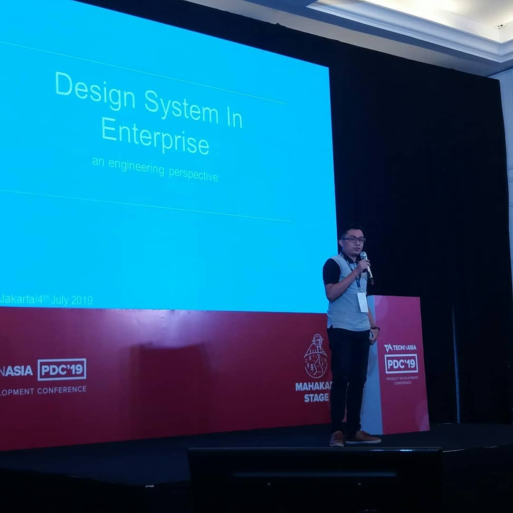

Afrimadoni Dinata
Enterprise Architect focused on AI governance
I’m a software developer and enterprise architect interested in how organizations can adopt AI responsibly. I also enjoy building software and exploring IoT and smart farming.
About me
About
I’m based in West Java, Indonesia, and have worked in technology for more than 15 years. I’m interested in what it takes to build software that fits the way people work.
With AI, I’m especially curious about how teams decide where to use it and who should be accountable for the results. I also like exploring how connected devices and software can help in agriculture.
Writing
Contact
If you’d like to talk about software projects or AI governance, reach out on LinkedIn.
Connect on LinkedIn